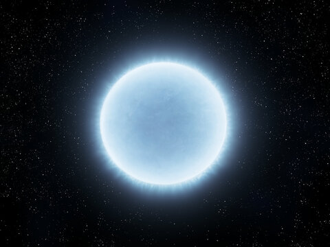
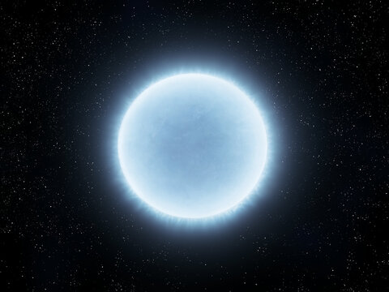

â Formação e Vida das Estrelas
🌠As estrelas nascem dentro de enormes nuvens de poeira e gás chamadas nebulosas. A gravidade atrai esse material para um ponto central, onde a pressão e a temperatura aumentam até iniciar a fusão nuclear — o processo que dá vida à estrela.
🔥 Durante a maior parte da vida, a estrela permanece na chamada sequência principal, fundindo hidrogênio em hélio e liberando grandes quantidades de energia em forma de luz e calor. O Sol, por exemplo, está nessa fase há cerca de 4,6 bilhões de anos.
💣 Quando o combustÃvel acaba, o destino da estrela depende de sua massa. Estrelas pequenas tornam-se anãs brancas, enquanto as muito massivas explodem como supernovas e podem originar estrelas de nêutrons ou buracos negros.
🔠Os astrônomos utilizam espectroscopia, telescópios espaciais e simulações computacionais para estudar esses ciclos estelares e compreender melhor a evolução do universo.
🬠No vÃdeo acima, você descobrirá como as estrelas são criadas, vivem e morrem — uma jornada brilhante do nascimento ao colapso estelar!
 

🌌 Este segundo vÃdeo complementa com informações visuais e cientÃficas sobre o que são as estrelas, como se formam e qual o papel delas no universo. Ideal para aprofundar seus conhecimentos!